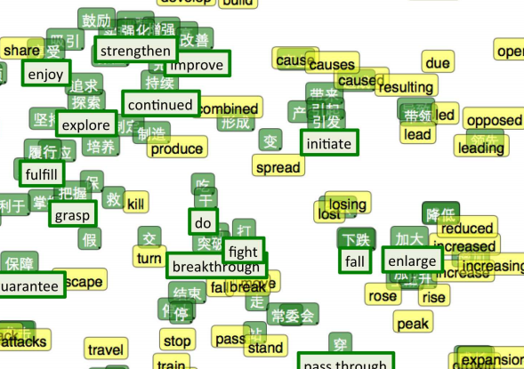

LMLow 3: Text mining and word2vec

Count-based methods
Previously represented by simplified assumptions of sparse vectors. These methods represent text as a bag of words where a document is described by counting the number of co-occurrences of words across documents.

Latent semantic analysis
Term document matrix is used where rows are unique words and columns each document. TF-IDF transformation used to weight the importance of each word. SVD factorization used to group documents using similar words. Detects latent semantic components between documents (Deerwester et al., 1990).
Shortcomings
Co-occurrence encodes shallow topical similarity. Levy & Goldberg (2014) finds "hogwarts" close to Harry Potter terms, as opposed to terms recognised as functionally or conceptually similar - i.e. other elite educational institutions.
Prediction-based methods
Purport Baroni et al.'s (2014) distributional hypothesis: "words that appear in the same contexts share semantic meaning."
Instead of co-occurrence counts, predictive methods take raw, tokenised text as input and learn word vectors by predicting its surrounding context.
Word2vec learns a distributed representation of each word in a vocabulary. A word embedding $W : \textit{words} \rightarrow \mathbb{R}^n$
$W("king") = (0.24, -0.30, 0.67, . . . )$
$W("queen") = (0.23, -0.35, 0.70, . . . )$
Dimensions of vector might be labelled by royalty, masculinity, age with each contributing to the abstract 'meaning' of a word in the vector space. Representation of each word is spread across every element of the vector.
How?
Word2vec uses a shallow neural network with a single hidden layer. Let's look at a simplified, trivial example that trains word2vec on the following sentences:
"the dog saw a cat"
"the dog chased the cat"
"the cat climbed a tree"
Our corpus contains eight unique words. Suppose we want to learn 3 dimensional word vectors and predict "climbed" from "cat"...
Neural Net Architecture
- The input and output layer have as many neurons as there are words in the vocabulary (8).
- The hidden layer has the dimensionality of the resulting word vectors (3).
- The weights matrices $WI$ and $WO$ are $8 \times 3$ and $3 \times 8$, respectively.
- Matrices are randomly initialised to small random values.
In our case, $WI$ and $WO$ look like...
$WI = \begin{bmatrix} -0.09 & 0.03 & 0.72 \\ 0.34 & 0.98 & 0.34 \\ 0.66 & -0.11 & -0.93\\ -0.33 & -0.35 & -0.65 \\ 0.34 & 0.89 & 0.11 \\ 0.88 & 0.76 & 0.23\\ -0.84 & -0.29 & 0.87 \\ 0.11 & -0.76 & 0.33 \end{bmatrix}$
$WO = \begin{bmatrix} 0.33 & 0.76 & 0.85 & -0.99 & -0.44 & 0.39 & 0.38 & 0.11 \\ 0.17 & 0.93 & 0.65 & -0.45 & 0.12 & -0.09 & 0.56 & 0.13\\ -0.08 & 0.93 & 0.74 & 0.85 & -0.34 & -0.78 & 0.33 & 0.71 \end{bmatrix}$
Reminder...
Our objective is to learn word relationships (between "cat" and "climbed", for example). Training proceeds by taking a one-hot encoded vector for each word.
- Input vector for cat is $[0,1,0,0,0,0,0,0]^t$
- Target vector for climbed is $[0,0,0,1,0,0,0,0]^t$
Learning (1)
Since our input vectors are one-hot, the matrix multiplication by weight matrix $WI$ amounts to simply copying the input word vector to the hidden layer ($H^t$).
$[0,1,0,0,0,0,0,0]^t \times WI = [0.34 , 0.98 , 0.34]$
$H^t = [0.34 , 0.98 , 0.34]$
Learning (2)
Carrying out a similar matrix multiplication between the hidden layer ($H^t$) and $WO$ we find...
$H^t \times WO = [0.25, 1.49, 1.18, -0.49, -0.15, -0.22, 0.79, 0.41]$
This creates what is known as the activation vector.
Learning (3)
Since our objective is to produce probabilities for words, we need the sum of neuron outputs to add to one. So, we convert the activation values of the output layer neurons to probabilities using the softmax function.
$$P(word_k|word_{context}) = \frac{exp(activation(k))}{\sum\limits_{n=1}^V exp(activation(n))}$$
Learning (4)
So, applying the softmax function, the probabilities for eight words in our "corpus" are:
$[0.09, 0.30, 0.22, \textbf{0.04}, 0.06, 0.05,0.15, 0.10]$.
The probability in bold represents our target word, "climbed". Given our target vector $[0,0,0,1,0,0,0,0]^t$. The error vector is computed by subtracting the probability vector from the target vector. Error is used to update the matrices for $WO$ and $WI$ using backpropagation.
Summary
After training, word vectors are copied from $WI$, which have been updated by backpropagation. Vectors of words appearing in similar contexts will be closer (cosine distance). Training proceeds iteratively by presenting different word pairs from the corpus.
Gensim: "topic modelling for humans"
from gensim.models import Word2Vec
sentences = [["the", "dog", "saw", "a", "cat"],
["the", "dog", "chased" ,"the" ,"cat"],
["the", "cat", "climbed", "a", "tree"]]
model = Word2Vec(sentences, min_count=0, window=1, size=3)
model.wv.similarity('cat', 'chased')
## Out[45]: 0.90155835391663142
model['cat']
## Out[48]: array([ 0.06525704, 0.02372613, 0.04815513], dtype=float32)
Visualise learnt embeddings using PCA
from sklearn.decomposition import PCA
from matplotlib import pyplot
X = model[model.wv.vocab]
result = PCA(n_components=2).fit_transform(X)
# create a scatter plot of the projection
pyplot.scatter(result[:, 0], result[:, 1])
words = list(model.wv.vocab)
for i, word in enumerate(words):
pyplot.annotate(word, xy=(result[i, 0], result[i, 1]))
pyplot.show()
But what can we do with word embeddings?
Application (1)
Spotify abstract the ideas behind word2vec by treating songs as words, and other songs in a playlist as their surrounding "context window".
In order to recommend songs to a user, Spotify examines a neighbourhood of 'song embeddings' of songs the user already likes!
Application (2)
Machine translation. Words from two different languages can be embedded in a single, shared space (Socher et al. 2013).
In light of our discussion, we observed word vectors pull similar words closer together, so using a few translation as anchor points, a mapping between English and Mandarin words can be created.
Thanks for learning machine learning!